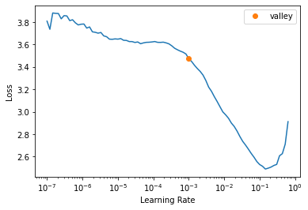

from fastai.vision.all import *
from fastbook import *MNIST in FastAI
MNIST Project in FastAI
Here, we will predict MNIST digits using FastAI. Then, we will go deeper and figure out what’s happening behind the scenes.
path = untar_data(URLs.MNIST)
Path.BASE_PATH = path
path.ls()
100.03% [15687680/15683414 00:00<00:00]
(#2) [Path('training'),Path('testing')](path/'training').ls()(#10) [Path('training/7'),Path('training/8'),Path('training/5'),Path('training/6'),Path('training/9'),Path('training/3'),Path('training/2'),Path('training/0'),Path('training/4'),Path('training/1')]Using fastai, it is very easy to train. We make a DataBlock with information on how to get labels, grab images, and split train/valid data.
dblock = DataBlock(
blocks=(ImageBlock, CategoryBlock),
get_items=get_image_files,
get_y=parent_label,
splitter=RandomSplitter(),
)
dls = dblock.dataloaders(path)Then, we take a look at it, and it looks like labels are correctly assigned to each image.
dls.show_batch()
We create a learner with resnet18, so we can use transfer learning. Then, we find the learning rate.
learn = vision_learner(dls, arch=resnet18, metrics=accuracy)
learn.lr_find()/usr/local/lib/python3.9/dist-packages/torchvision/models/_utils.py:208: UserWarning: The parameter 'pretrained' is deprecated since 0.13 and will be removed in 0.15, please use 'weights' instead.
warnings.warn(
/usr/local/lib/python3.9/dist-packages/torchvision/models/_utils.py:223: UserWarning: Arguments other than a weight enum or `None` for 'weights' are deprecated since 0.13 and will be removed in 0.15. The current behavior is equivalent to passing `weights=ResNet18_Weights.IMAGENET1K_V1`. You can also use `weights=ResNet18_Weights.DEFAULT` to get the most up-to-date weights.
warnings.warn(msg)SuggestedLRs(valley=0.0010000000474974513)
Although fastai suggests a learning rate suitable to use, I can use a little bit bigger learning rate. I can probably use 0.01 even if 0.001 is suggested.
learn.fine_tune(3, 0.01)| epoch | train_loss | valid_loss | accuracy | time |
|---|---|---|---|---|
| 0 | 0.383465 | 0.211662 | 0.934286 | 00:46 |
| epoch | train_loss | valid_loss | accuracy | time |
|---|---|---|---|---|
| 0 | 0.134975 | 0.076517 | 0.978714 | 00:59 |
| 1 | 0.030738 | 0.033497 | 0.991071 | 00:59 |
| 2 | 0.019911 | 0.024113 | 0.993071 | 00:59 |
Training was very easy with almost perfect accuracy thanks to fastai. However, it is fun to dive deeper and figure out what’s going on under the hood.